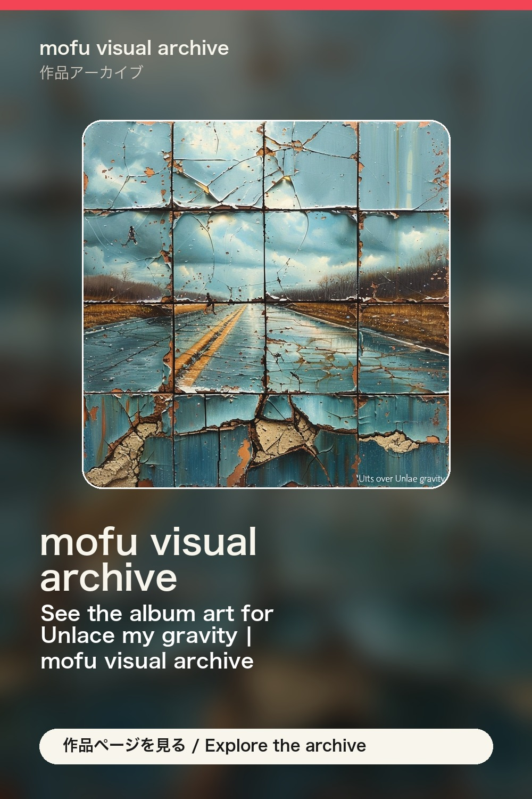

作品アーカイブ / mofu visual archive
See the album art for Unlace my gravity | mofu visual archive
Explore “Unlace my gravity” through a compact archive page for the track, cover art, and listening links in mofu visual archive. Release order 024. Lyric fragment: Collapsed breaths thrash inside my chest. Keywords: visual music archive, AI visuals, cover art, AI music.
visual music archive, AI visuals, cover art, AI music
Track: Unlace my gravity